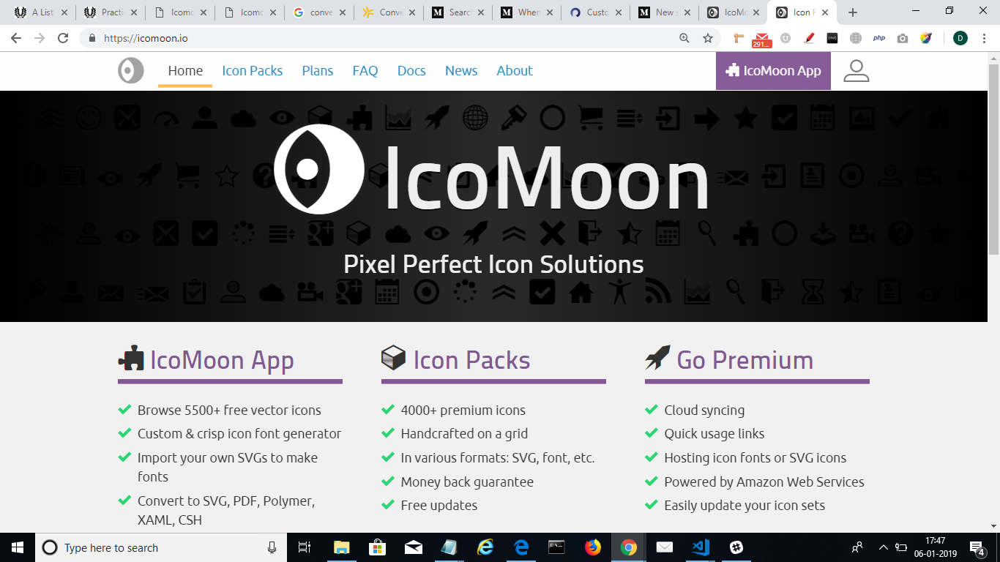
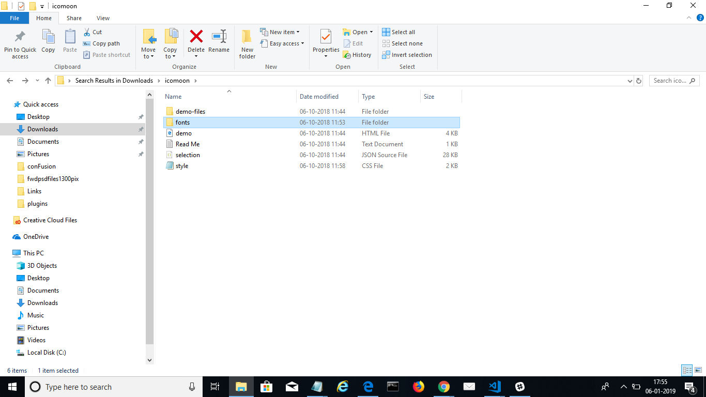

There are generators that allow you to do so. These allow you to upload any number of SVG files and they build a unique set of fonts, just for your project. Then, it’s as easy as adding a provided CSS class to your HTML code and your icon shows up on the page. Scalability is important especially when you view the site on high-resolution screens like retina displays. The advantage that an SVG file gives you — you can scale these icons as much as you like without losing the quality.
How to add a custom icon in IcoMoon?
You night have tried many times to find the perfect icon in the available sets and failed?You dont need to worry, I’ll guide you through the process of getting your SVG image into the set. Just search for IcoMoon.io on google & click on the link which will lead you to the site. 
Now click on IcoMoon App & now you can import icons through it. Start by clicking on “Import Icons”.
A zip file is downloaded . Now extract it & you will find the style.css & in fonts folder 4 files which needs to be added in the project .
Using web fonts created in IcoMoon
OK, so you got your crafted SVG into the IcoMoon tool and created the font. Now you just need to add the font to your project. When adding it you may need to edit the paths in the CSS file to point to where you’re keeping the actual font files.Many times due to the wrong path these font are not getting appeared in the project.